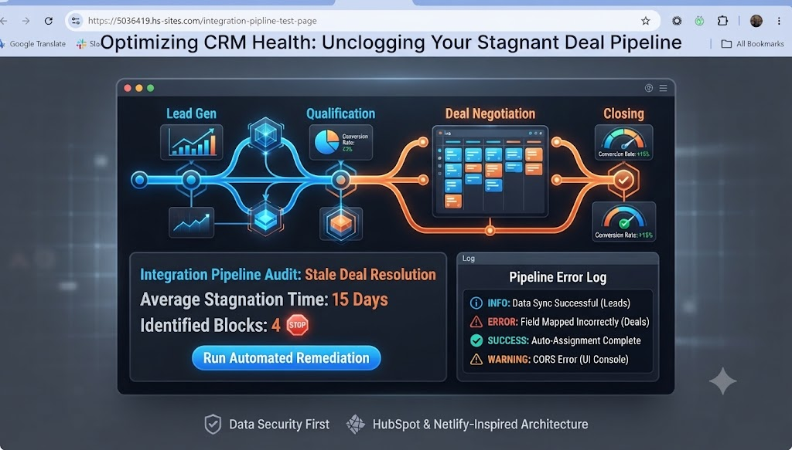

Building the Engine: A Secure Proxy for Stagnant Deals

In the world of B2B sales, speed and precision are everything. At Seamless Outbound, we don't believe in waiting for leads to nurture themselves—we believe in building systems that do the heavy lifting for you. That is why we started building a HubSpot landing page to track stagnant deals and ensure no opportunity slips through the cracks.
The "No-Environment-Variable" Dilemma
When I started building this landing page, I quickly hit a wall. HubSpot’s platform is powerful, but it does not natively provide a secure way to store private environment variables like API tokens. If you put your credentials directly into a HubSpot module, you are effectively leaving the keys to your CRM in the front door for anyone to find.
I realized that to keep our sales data secure, I needed a way to bridge HubSpot’s frontend with a backend that could hold secrets. That is why setting up a serverless function with Netlify became the essential solution. By hosting our proxy on Netlify, we gain access to a secure environment where we can hide our HUBSPOT_ACCESS_TOKEN while still allowing our HubSpot landing page to pull the data it needs.
How It Works: Automated Auditing
- Secure Token Handling: Our HubSpot access token lives strictly on the server and is never exposed in the browser.
- Intelligent Filtering: Our backend automatically filters for deals that haven't been touched in over seven days.
- Controlled Access: We configured CORS headers to ensure that only our specific landing page can request this data.
This is just the first step in our mission to turn outbound sales lambs into lions. We are building the infrastructure that makes high-volume, high-margin sales repeatable.